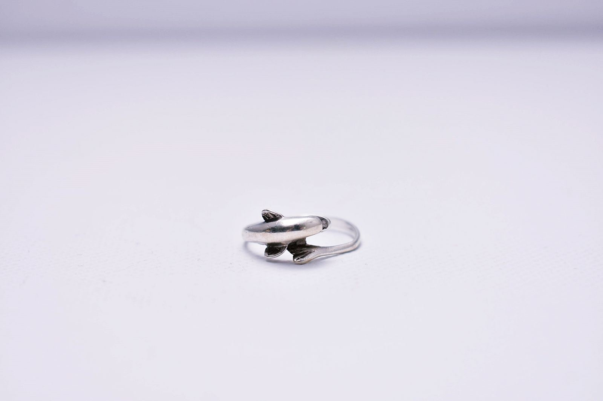
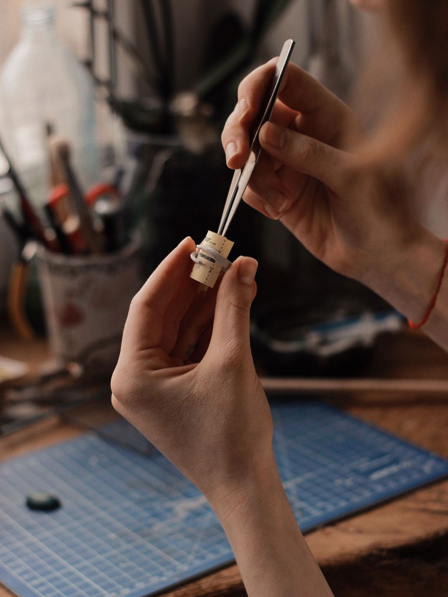
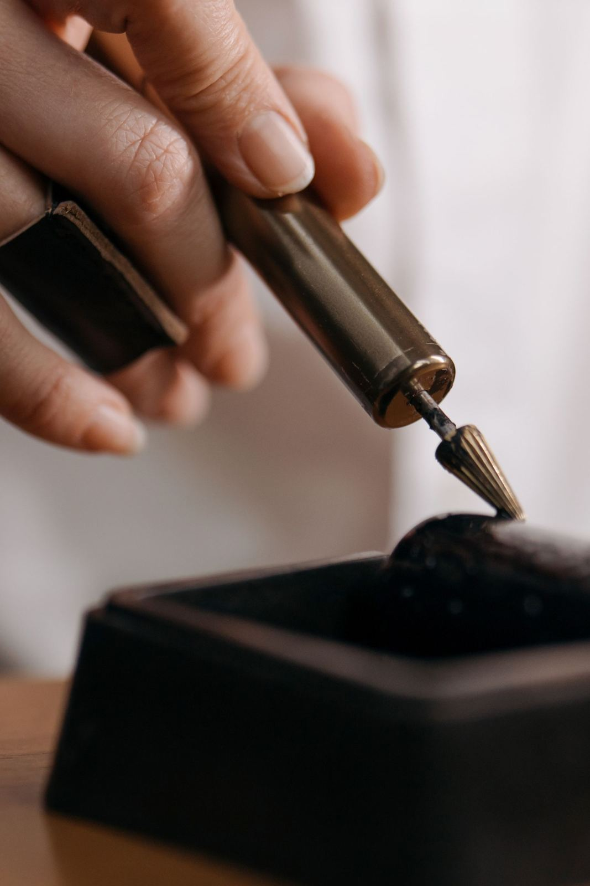
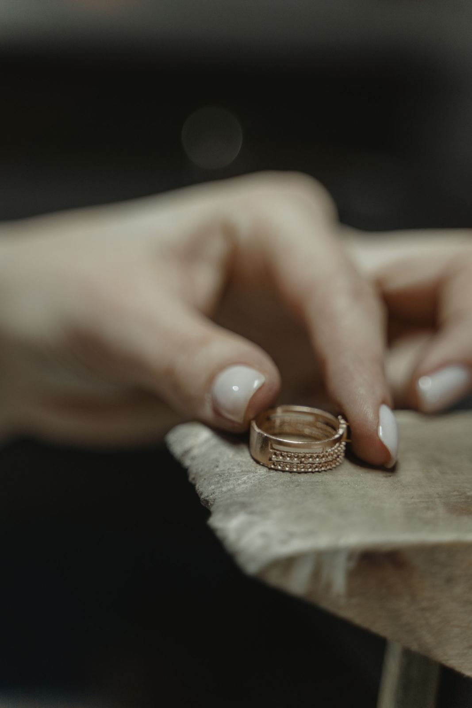
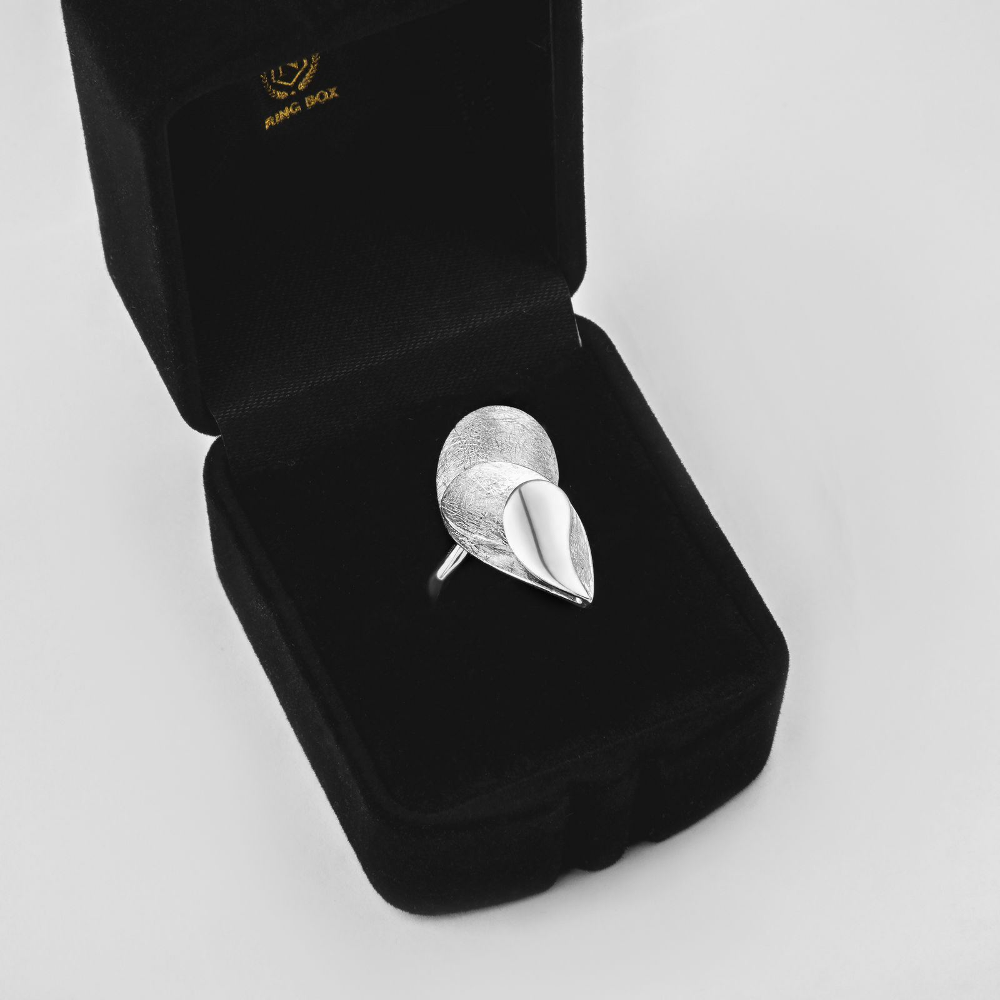

GRACE 山梨・甲府のジュエリー工房 株式会社グレース



株式会社グレースは、山梨県甲府市でジュエリーの製作・加工を行う会社です。
工場設立から
31
年目を迎えました。
在籍する職人
12
名が、シルバーをはじめとする幅広い貴金属を扱っています。
主な事業
Business
-
No.01
CAD設計・原型製作
デザインをCADで立体化し、製作のもととなる原型をつくります。

-
No.02
磨き・石留め
地金の表面を磨いて仕上げ、デザインに合わせて宝石を留めます。

-
No.03
OEM製作
ブランドや企業のご依頼に応じて、オリジナルジュエリーを製作します。

会社概要
Company
- 会社名
- 株式会社グレース
- 代表者
- 星山 安奈
- 所在地
- 〒400-0851
山梨県甲府市住吉3-26-16 - 工場・職人
- 工場設立31年目
職人12名
〒400-0851 山梨県甲府市住吉3-26-16